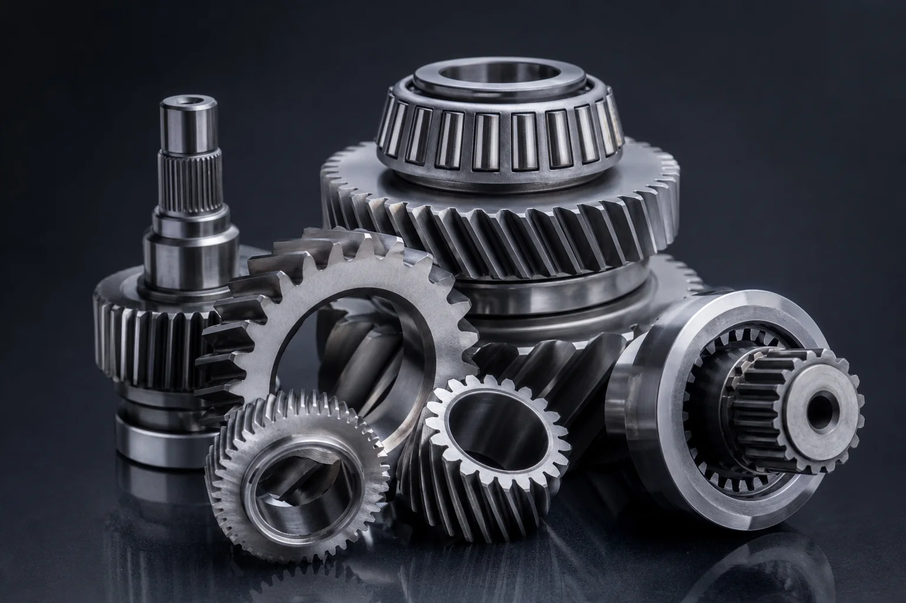
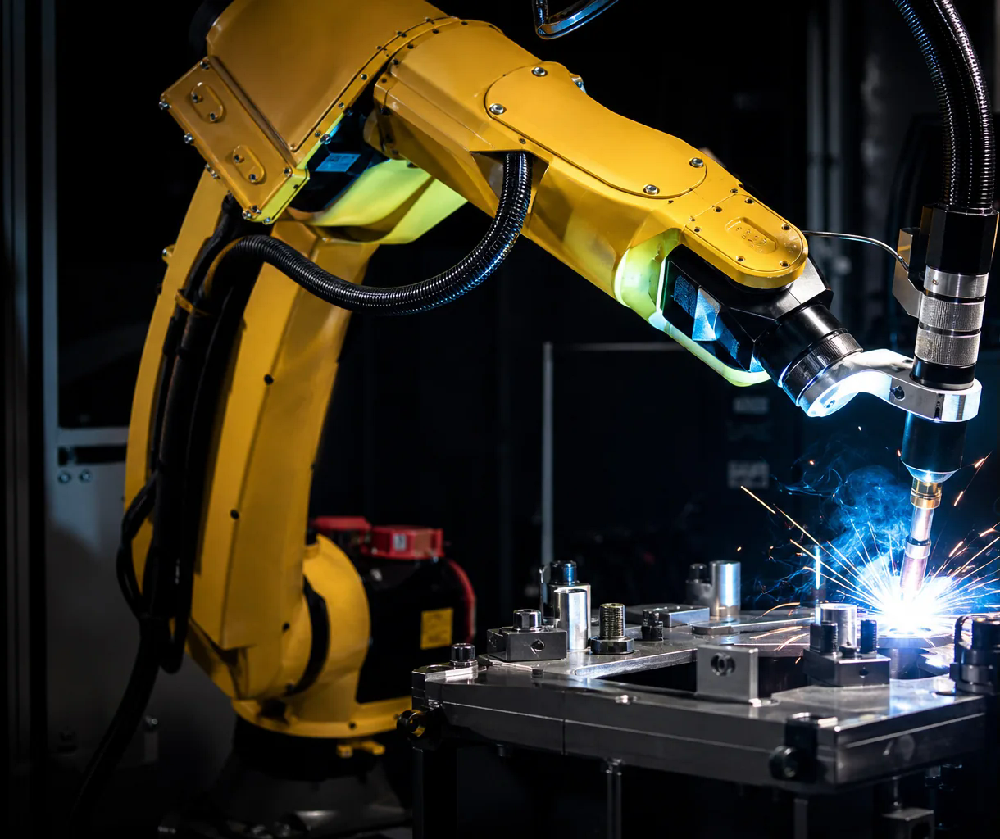
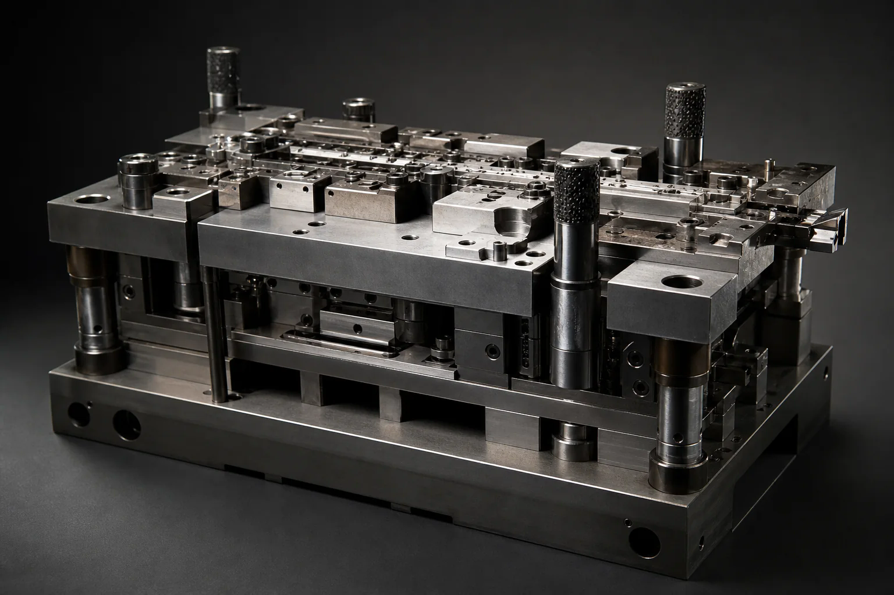

00 / Enquiry received
Your enquiry
enters the line.
Send a drawing, CAD file, sample or functional brief, together with quantity and target timing.
Start an enquiryQuantamorph / Design · manufacture · inspect · supply
One accountable engineering team for design, CNC turning, VMC milling, conventional toolroom work, fabrication, special-purpose machines, inspection and supply.
Send a drawing, sample or functional brief. We define the route, quotation and delivery scope before work starts.
00—10 / One continuous production route
The journey starts before material reaches a machine. Quantamorph reviews the enquiry, defines the route and issues the quotation first.
After approval, design support is added where required. Drawing-ready work can move directly into production planning.
Stage 00 of 10: Enquiry received.
Send a drawing, CAD file, sample or functional brief.
Geometry, material, quantity and acceptance needs are assessed.
Scope, process, assumptions and delivery basis are defined.
Design support is available after approval; drawing-ready work moves forward directly.
Grade and stock form are matched to the approved requirement.
Stock is cut to the required starting size.
CNC turning, VMC milling and selected operations create the geometry.
Key features are checked during manufacture.
Specified characteristics are checked before release.
Released components are protected, identified and packed.
Packaging, documentation and delivery follow the agreed order.
Capabilities / Under one Quantamorph route
Quantamorph covers design, machining, toolroom, fabrication, production systems, inspection and supply. Machine envelope, material, tolerance and programme fit are confirmed against the RFQ.
Component, tooling and production-system design developed around function, manufacture and acceptance.

What we can assess
The useful question is not “which card fits?”. It is whether the drawing, material, volume and acceptance requirements point to a viable route.
Parts with milled geometry, interfaces, pockets, bores and drawing-defined features.
Shafts, sleeves and rotational parts where the available turning route is suitable.
Production aids, checking fixtures and workholding requirements developed around use.
Cut, formed or joined assemblies where the process and inspection route can be confirmed.
One-off and recurring requirements reviewed against quantity, capacity and programme needs.
Quantamorph engineering / Beyond the component
Quantamorph can take responsibility for the design and manufacture of the component itself, the tooling that enables it, or the special-purpose equipment around the production operation.


The route can begin from an existing drawing, a sample or a functional requirement. Design responsibility and acceptance criteria are defined before production starts.
2D and 3D design for components, fixtures, tooling and production equipment, developed around function and manufacture.
CNC lathe work for rotational components, from prepared blanks through finished features.
Vertical machining-centre work for faces, pockets, bores and interfaces that complement turning or stand alone.
Conventional machines and fitting capability for tools, dies, repair work, development parts and one-off requirements.
Production tooling, workholding and checking fixtures developed around the required operation and part definition.
Fabricated and welded structures, guards, frames, brackets and assemblies produced to the approved requirement.
SPMs and application-specific production systems designed and built around the process, interfaces and acceptance criteria.
Capability basis These capabilities are provided by Quantamorph. Machine envelope, material, tolerance, validation, inspection and programme details are confirmed for each RFQ.
Quality / Define before manufacture
The inspection route should be part of the commercial scope—not an assumption made after production.
Identify the approved requirement and the features that govern acceptance.
Clarify specified characteristics, standards and any project-specific conditions.
Agree checking level, equipment needs and any reporting requirement at quotation.
Supply inspection, material or delivery records where they form part of the agreed order.
No universal tolerance, inspection level or documentation package is implied. These are defined for each quotation.
Applications / Enquiries considered
Geometry is only part of the brief. End use, quantity, documentation and acceptance requirements shape the route. Relevant sector experience and compliance needs should be confirmed for the project.
Why Quantamorph / One accountable route
Quantamorph keeps design, production planning, machining, fabrication, inspection, packing and supply connected to the same approved requirement.
You have one commercial and technical point of contact from the first review to the delivered component, tool or production system.
Bring a finished drawing or ask Quantamorph to develop the design after quotation approval.
CNC, VMC, conventional toolroom, tooling, fabrication and SPM work are coordinated against one scope.
In-process checking, final inspection, packing and supply remain tied to the agreed requirement.
RFQ / What happens next
Send the drawing, sample or functional brief. Quantamorph reviews it, defines the quotation and then takes the approved work through design where needed, production, inspection and supply.
Send the requirement, quantity and target date.
We assess geometry, materials and acceptance needs.
Route, scope, assumptions and delivery basis are defined.
Approve the order; design support is added where required.
Material, cutting and selected manufacturing operations begin.
Checks, release and protective packing follow the agreed scope.
The completed order is supplied with agreed documentation.
Start an enquiry / sales@quantamorph.co.uk
Share your drawing, CAD file, sample details or functional requirement. Include the revision, material, quantity, target date and any inspection, validation or documentation needs that affect the quotation.
Send your drawing Prefer to agree confidentiality or file transfer first? Email the requirement summary without attachments.